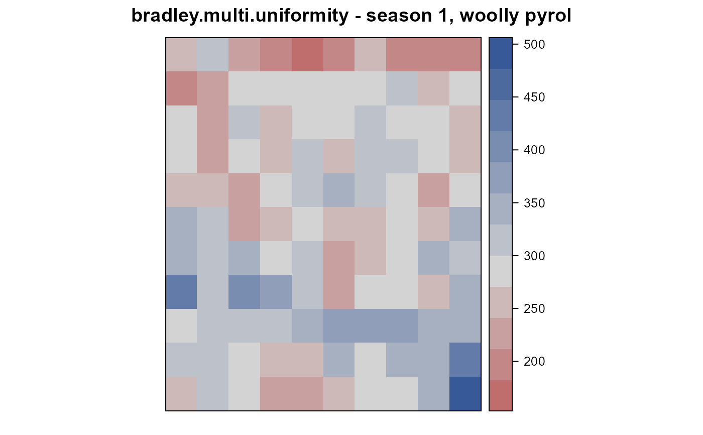
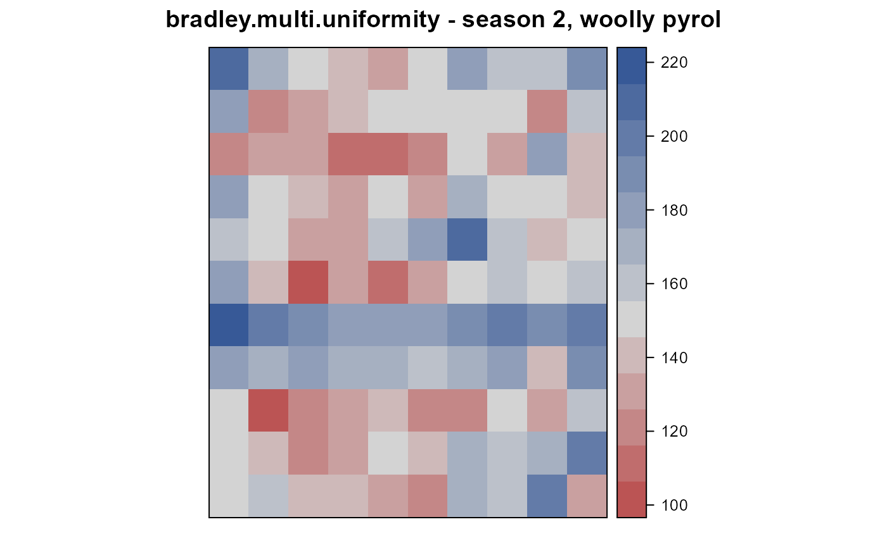
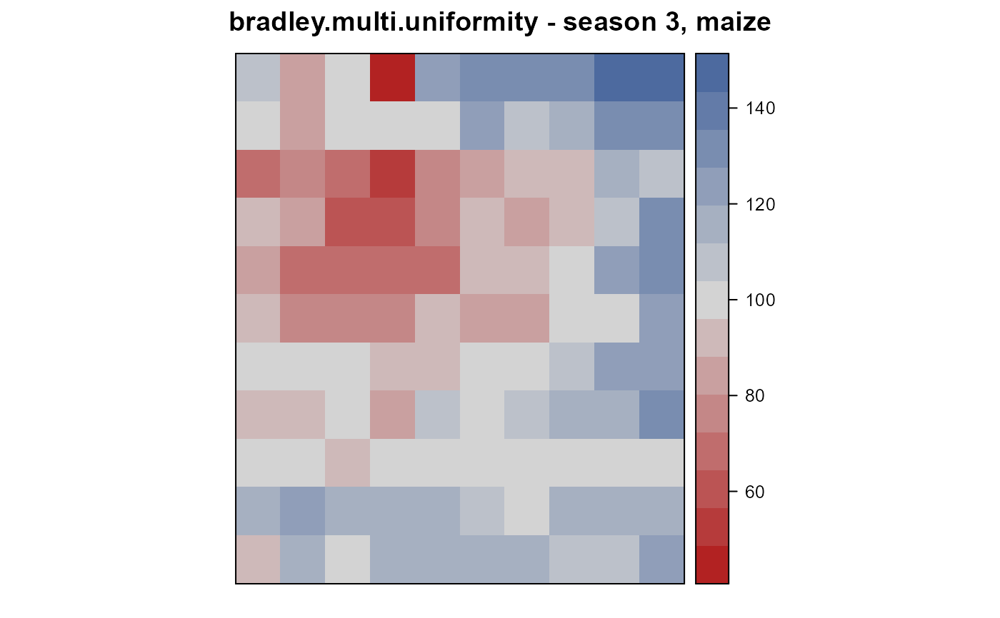
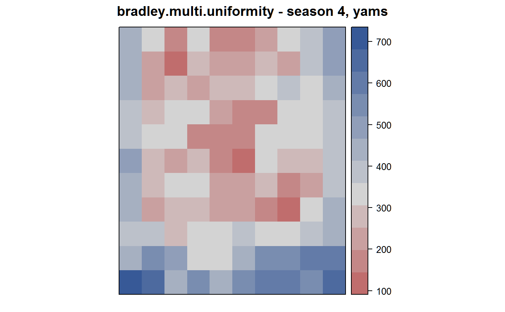
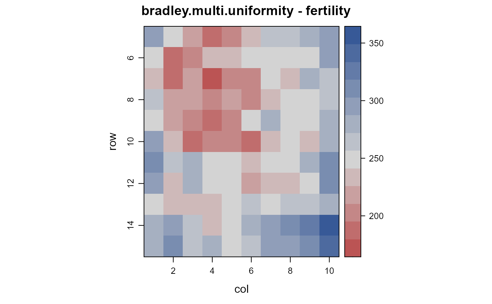

bradley.multi.uniformity.RdUniformity trial of 4 crops on the same land in Trinidad.
data("bradley.multi.uniformity")
A data frame with 440 observations on the following 5 variables.
rowrow
colcolumn
yieldyield, pounds per plot
seasonseason
cropcrop
Experiments conducted in Trinidad.
Plots were marked in May 1939 in Fields 1, 2, and 3. Prior to 1939 it was difficult to obtain significant results on this land.
Plots were 1/40 acre each, 33 feet square. Discard between blocks (the rows) was 7 feet and between plots (the columns) was 4 feet. For roadways, a gap of 14 feet is between blocks 10 and 11 and a gap of 10 feet between plots E/F (which we call columns 5/6).
Data was collected for 4 crops. Two other crops had poor germination and were omitted.
Field width: 10 plots * 33 feet + 8 gaps * 4 feet + 1 gap * 10 = 372 feet
Field length: 11 blocks (plots) * 33 feet + 9 gaps * 7 feet + 1 gap * 14 feet = 440 feet
Crop 1. Woolly Pyrol. Crop cut at flowering and weighed in pounds. Note, woolly pyrol appears to be a bean also called black gram, phaseolus mungo.
Crop 2. Woolly Pyrol. Crop cut at flowering and weighed in pounds.
Crop 3. Maize. Net weight of cobs in pounds. Source document also has number of cobs.
Crop 4. Yams. Weights in pounds. Source document has weight to 1/4 pound, which has here been rounded to the nearest pound. (Half pounds were rounded to nearest even pound.) Source document also has number of yams.
Notes by Bradley.
The edges of the field tended to be slightly higher yielding. Thought to be due to the heavier cultivation which the edges recieve (p. 18).
The plot in row 9, col 7 (9G in Bradley) is higher yielding than its neighbors, thought to be the site of a saman tree dug up and burned when the field was plotted. Bits of charcoal were still in the soil.
Bradley also examined soil samples on selected plots and looked at nutrients, moisture, texture, etc. The selected plots were 4 high-yielding plots and 4 low-yielding plots. Little difference was observed. Unexpectedly, yams gave higher yield on plots with more compaction.
P. L. Bradley (1941). A study of the variation in productivity over a number of fixed plots in field 2. Dissertation: The University of the West Indies. Appendix 1a, 1b, 1c, 1d. http://hdl.handle.net/2139/41264
The data are repeated in: C. E. Wilson. ( Study of the plots laid out on field II with a view to obtaining plot-fertility data for use in future experiments on these plots, season 1940-41. Dissertation: The University of the West Indies. Page 36-39. http://uwispace.sta.uwi.edu/dspace/handle/2139/43658
None
library(agridat) data(bradley.multi.uniformity) dat <- bradley.multi.uniformity # figures similar to Bradley, pages 11-15 libs(desplot) desplot(yield ~ col*row, dat, subset=season==1, flip=TRUE, aspect=433/366, # true aspect (omits roadways) main="bradley.multi.uniformity - season 1, woolly pyrol")desplot(yield ~ col*row, dat, subset=season==2, flip=TRUE, aspect=433/366, # true aspect (omits roadways) main="bradley.multi.uniformity - season 2, woolly pyrol")desplot(yield ~ col*row, dat, subset=season==3, flip=TRUE, aspect=433/366, # true aspect (omits roadways) main="bradley.multi.uniformity - season 3, maize")desplot(yield ~ col*row, dat, subset=season==4, flip=TRUE, aspect=433/366, # true aspect (omits roadways) main="bradley.multi.uniformity - season 4, yams")dat1 <- subset(bradley.multi.uniformity, season==1) dat2 <- subset(bradley.multi.uniformity, season==2) dat3 <- subset(bradley.multi.uniformity, season==3) dat4 <- subset(bradley.multi.uniformity, season==4) # to combine plots across seasons, each yield value was converted to percent # of maximum yield in that season. Same as Bradley, page 17. dat1$percent <- dat1$yield / max(dat1$yield) * 100 dat2$percent <- dat2$yield / max(dat2$yield) * 100 dat3$percent <- dat3$yield / max(dat3$yield) * 100 dat4$percent <- dat4$yield / max(dat4$yield) * 100 # make sure data is in same order, then combine dat1 <- dat1[order(dat1$col, dat1$row),] dat2 <- dat2[order(dat2$col, dat2$row),] dat3 <- dat3[order(dat3$col, dat3$row),] dat4 <- dat4[order(dat4$col, dat4$row),] dat14 <- dat1[,c('row','col')] dat14$fertility <- dat1$percent + dat2$percent + dat3$percent + dat4$percent libs(desplot) desplot(fertility ~ col*row, dat14, tick=TRUE, flip=TRUE, aspect=433/366, # true aspect (omits roadways) main="bradley.multi.uniformity - fertility")